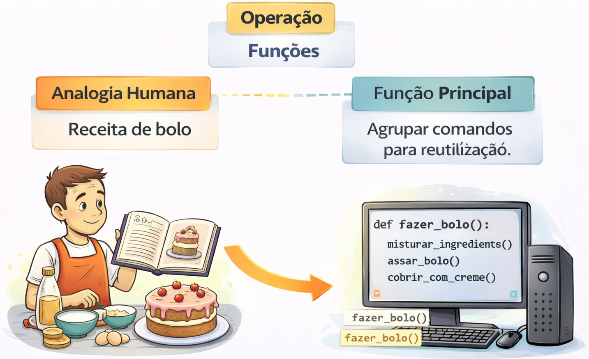

Aula 5 Procedimentos e Funções

Imagine que você precisa calcular o imposto de renda em vários lugares do seu código. Em vez de repetir a fórmula toda vez, você cria uma “caixinha” com esse cálculo.
5.0.1 Criação e Chamada de Funções
Uma função é um bloco de código reutilizável que executa uma tarefa específica.
Criando minha primeira função em python:
Utilizando (chamando) a minha primeira função:
Exemplo completo
5.0.2 Conceito de Modularização do Código
Modularizar nada mais é do que dividir o problema em blocos menores (funções).
Quais são as vantagens de se dividir o código blocos
- Código mais organizado
- Reutilização
- Facilidade de manutenção
- Menos erros
5.0.2.2 Exemplo do mesmo código python COM modularização
# Declaração da função "Ler_numeros()"
def ler_numeros():
a = int(input("Digite o primeiro número: "))
b = int(input("Digite o segundo número: "))
return a, b
# Declaração da função "Calcular_soma()"
def calcular_soma(a, b):
return a + b
# Declaração da função "Mostrar_resultado()"
def mostrar_resultado(resultado):
print("Resultado:", resultado)
# Executando o programa chamando o nome de cada função
a, b = ler_numeros()
resultado = calcular_soma(a, b)
mostrar_resultado(resultado)5.0.3 Passagem de Parâmetros e Valores de Retorno
5.0.3.1 O que são parâmetros
Parâmetros são valores enviados para a função.
Exemplo:
# Declaração da função "saudacao()"
def saudacao(parametro1):
print(f"Olá, {parametro1}!")
# Executando a função "saudacao()"
saudacao("Fulano")saída:
5.0.3.2 O que são Valores de Retorno
Um valor de retorno é o valor devolvido pela função. No python, o resultado é colocado para fora da função utilizando o “comando” return.
Exemplo:
# Declaração da função "soma()"
def soma(a, b):
return a + b
# Executando a função "soma()"
resultado = soma(5, 3)
print(resultado)Saída:
5.0.3.3 Juntando tudo: Múltiplos parâmetros e retorno
O programador criou em python uma função denominada operacoes. Essa função faz soma e multiplicação entre 2 números.
A função possui duas variáveis de entrada (2 parâmetros). Essa função primeiro soma as duas variáveis de entrada e salva a soma em uma variável de retorno chamada saida_soma; Após essa função multiplica as duas variávies de entrada e salva a multiplicação em uma variável de retorno chamada saida_produto;
Finalmente, a função devolve o fruto do trabalho interno dela (variáveis saida_soma e saida_produto) através do comando return
# Declaração de uma função em python
def operacoes(parametro1, parametro2):
saida_soma = parametro1 + parametro2
saida_produto = parametro1 * parametro2
return saida_soma, saida_produto
# Inicio do programa , que faz uso da função declarada acima
saida1, saida2 = operacoes(4, 2)
print("Soma:", saida1)
print("Produto:", saida2)Saída: